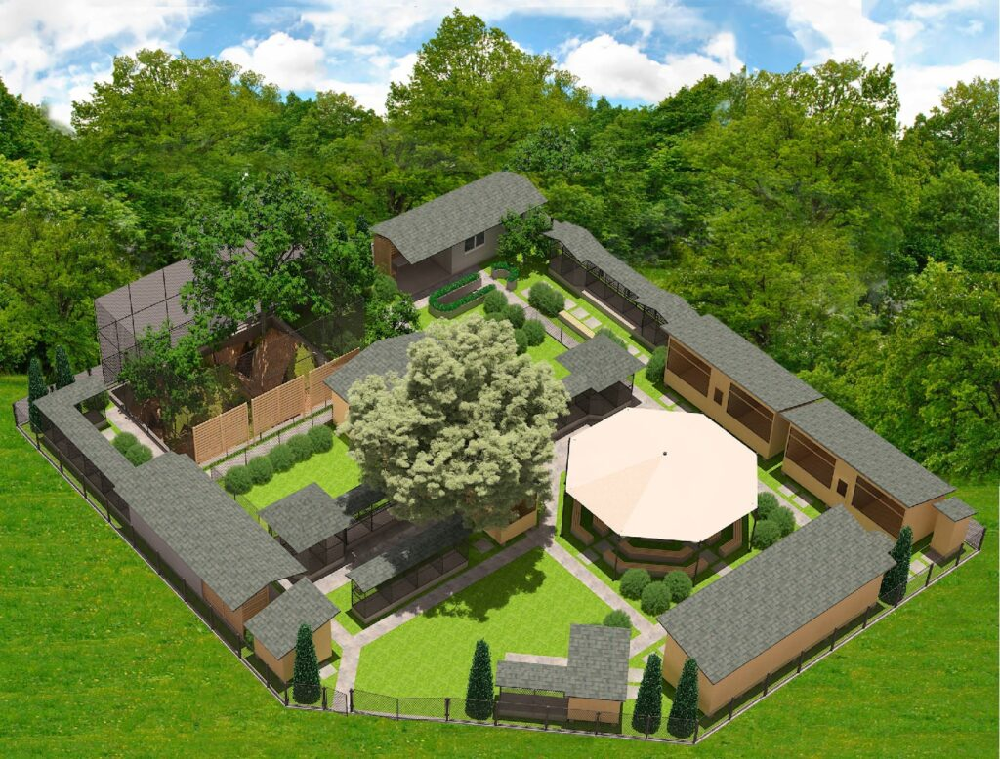

В Тольятти есть старейший приют для птиц, созданный изначально как зооуголок юннатского «Клуба любителей природы» в 1973 году
В 1988 году для размещения животных был официально выделен и оформлен небольшой земельный участок 10,5 соток при содействии и участии УСКБ ВАЗа.
С 1995 года по инициативе волонтёров клуба на базе зооуголка был создан приют для пострадавших диких животных, ставший в дальнейшем приютом для диких птиц, попавших в беду.
Таким образом, приюту в 2023 году исполняется 28 лет, а самому Клубу любителей природы в апреле уже исполнилось 50 лет!
Птицы — наиболее уязвимые обитатели природы и чаще других становятся жертвами «благ цивилизации», людского невежества, а порой и жестокости.
И именно в Тольятинском уникальном приюте находят убежище дикие птицы, пострадавшие на автодорогах, подстреленные из пневматического оружия, разбившиеся об электропровода и зеркальные стекла зданий, а порой и ставшие жертвами моды на дикую экзотику.
Иными словами, у каждой птицы, попавшей в приют, своя печальная история.
В приюте птицы живут в специально построенных вольерах
Некоторые из пернатых очень крупные и нуждаются в определенной площади для нормальной, пусть и вольерной жизни.
В дикую природу после прохождения курса лечения и реабилитации в приюте возвращаются только птицы, имеющие максимальные шансы на выживание.
Остающиеся в приюте на ПМЖ птицы могут быть приравнены к инвалидам и на воле самостоятельно просто не выживут.
Приют открыт для экскурсий
Здесь взрослые и дети знакомятся с историей каждого необычного жильца этого чудного места!
Достаточно один раз посетить этот дом для птиц, чтобы с первого знакомства влюбиться в его обитателей!
Тем не менее, многие годы замечательный приют для птиц просто выживал с помощью неравнодушных людей, небольшой группы волонтеров и его бессменного вдохновителя Натальи Ивановны!
Но пришёл день, и сегодня уникальному для Самарской области приюту для птиц необходима наша с вами реальная помощь и поддержка!
Новоявленные владельцы земельного участка, на части которого приют все эти годы размещался в прямом смысле слова на крохотном клочке земли, в лице Федерального Медицинского биологического агентства через суд заставили приют для птиц освободить территорию под прямой угрозой «стереть с лица земли бульдозерами приют и его обитателей»!
Приют новые владельцы земельного участка намеренно отрезали от систем электроснабжения, и питомцы приюта зимовали при невозможном холоде, а неравнодушные люди всем миром собирали на газовые обогреватели и бензогенераторы, чтобы помочь приюту пережить лютые морозы.
Сейчас перед нами стоит задача построить Приют на новом месте
Для этого выбран новый земельный участок в черте города Тольятти (так как все волонтеры и руководитель являются жителями этого города), с обязательным возведением на нем всех необходимых в уходе и содержании редких птиц постройками (вольеры и прочее).
Кроме того, обитатели приюта периодически нуждаются в лечении, и постоянно в корме, оплате коммунальных услуг и прочих обязательных расходов.
За основу были взяты модульные конструкции сборно-разборного типа.
Их можно разбирать, перевозить при необходимости и собирать заново.
Нам можно верить
Нас давно знают, о нашей работе говорят и пишут в СМИ.
Вполне возможно, Вы тоже уже много слышали о приюте или видели видеоролики о наших подопечных, в том числе о тех, которых мы выпускаем обратно в дикую природу!

Некоторые видеосюжеты о нас и нашей работе:
Первый канал: https://vk.com/video-66587109_456239039
Выпускаем на волю птицу Большой Сорокопут: https://vk.com/wall-66587109_17262
Другие наши видео: https://vk.com/videos-66587109
Статьи:
Новости Тольятти: https://augustnews.ru/
Комсомольская Правда: https://www.samara.kp.ru/daily/27251.5/4381241/
ТЛТ.ру: https://tlt.ru/city/v-tolyatti-ot-unichtozheniya-spasli-priyut-dlya-ptic/2161665/
Очень просим вас не оставить уникальный Приют для птиц в беде и помочь любой посильной суммой!
Не проходите мимо!
Помогите восстановить на новом месте Приют и сохранить жизнь удивительным и редким птицам!